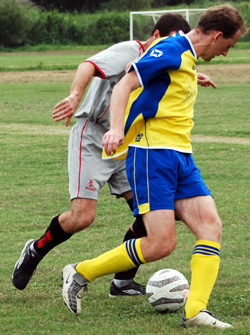

|
Misato, Sunday 2nd September,
5-all thrillers are unforgettable matches where people can remember each thrilling event in the game, aren’t they?! Well, I didn’t play in the 5-all ding dong between the Clash and Zion last season and don’t think I’ve ever seen one at a stadium or on TV. I do remember a 4-4 thriller between Charlton and West Ham where Paul Kitson scored a hat-trick for the Hammers and a young Jermaine Defoe the other while for Charlton Euell and Johansson got a brace each with Johansson scoring his second and the final equaliser of the game in the last minute. Git. Well anyway come the final whistle I thought that the Clash had won this game at Misato 5-4 and I was in it so my memory cannot be relied on very heavily, but then again the referee agreed with me until corrected by most but me and a Barbarians defender who thought it was 4-4. Sorry to bring that up Jorge.
Clash’s Paul Kitson on Sunday was Andy Gill. Ok to be fair to the Cold-blooded Giller (as he asked us to call him from now on during post match beers) he was more our Didier Drogba. He ran at the terrorised Barbarians defence time and time again, scored a hat-trick including one superbly taken down from a goalkeeper’s punt up the field (yes of course that man who shall not be named in this report only had words for his assist at the end of all the action and ignored the fact he conceded 5), a penalty that he won and a goal that he assures us was an intentional shot from a Van Basten like angle. It wasn’t a volley though and I still say it was a cross. It did scream in though. Gill also set up a Barbarians own gaol and probably all but one or two of our other chances of the game from open play including one for me that I didn’t put away on my until-then-never-used-for-shooting left foot. He’s learnt his lesson now and my screaming runs into the box will be ignored by yet another Clash striker. That aside I have to say his pace, the headers he won, his dribbling and his hold up play made it an extremely hard day’s work for the usually solid Barbarians defence and often single handedly kept us in the game.

The Barbarians themselves controlled large chunks of the match with good movement and nice passing from the back through midfield and flashes of wonderful skill from their star striker Romaneiro and some direct yet controlled and tricky running from Toshi Noguchi (editor; please check. The Japanese lad with the sweatband on his head?). They twice held two goal leads after conceding the first. I think I’m correct in saying theirs is a pretty settled team and that is apparent in how they link up and know what to expect from each other. They kept possession far better than us throughout. They took their chances well though I think Romaneiro’s cocky celebration catcalling did a great deal in spurring on the Clash to keep chasing the game throughout despite finding themselves 3-1 and 5-3 down at points in the match. He also showed that even the amateur game is not safe from diving for penalties but was rightly booked for his attempted deception by the well positioned referee.
As for the Clash overall? Well we had new partnerships in central midfield and up front, gave debuts to Neil at left back and Sam in midfield and were certainly nowhere near as fluent as the opposition at any point though on occasion played a little without relying just on balls to Gill down the wings. We fought throughout but were naïve at times. We were as usual a threat from deadballs with Captain Webster, Simon Jelfs, and Pingler coming up for corners and so eventually Simon it was who after some pinball in the box lashed in with true Tony Adams up-from-the-back style. It was the third and final equaliser of a high tempo game that despite the bookings and some handbags was generally played in good spirit. For the Barbarians’ goals please read their match report. I hope they give suitable credit to us for the assists though they did score a couple of crackers too in all honesty.
MoM: Andy ‘The Cold Blooded Giller’ Gill
Report by Chris ‘Sunburnt’ Arnott
|